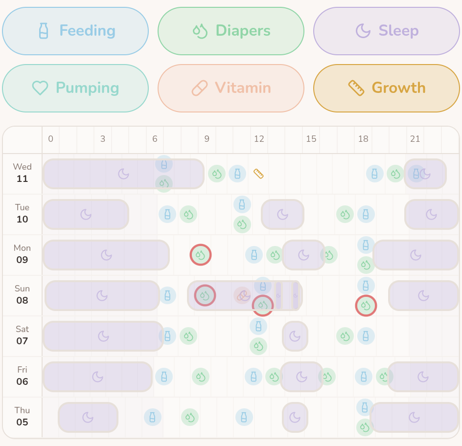
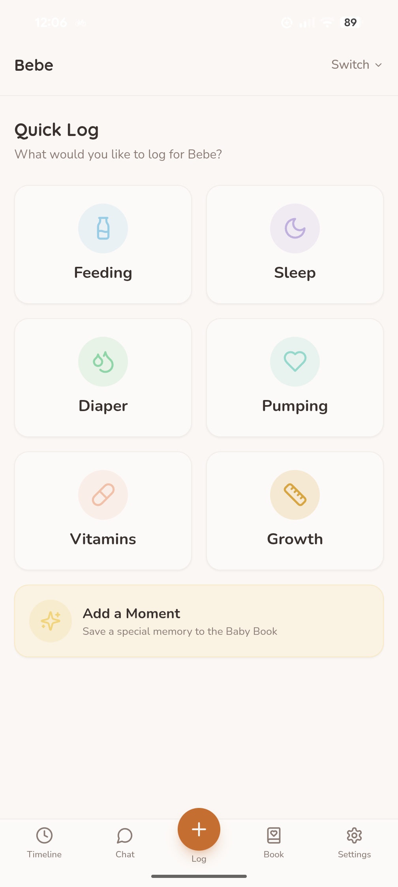

BABYBABY GUIDES / THE EVERYDAY
A simple newborn feeding, sleep & diaper tracker.
For the moments when “when was the last feed?” feels like a surprisingly difficult question.
It’s the middle of the night. There’s a bottle by the sink, a muslin over your shoulder, and you’re fairly sure the last diaper change happened before the feed. Or was it after?
A newborn tracker gives those little details somewhere to land. A time, a feed, a nap, a change. Something you can look back at without trying to remember the whole night.
You can use a notebook, a shared note, or an app. Here’s a simple way to begin, with a blank log you can print and a walkthrough for doing it in BabyBaby.
Start with the question you keep asking.
“When did they last feed?” “How long was that nap?” “Did you already change them?” Start with whichever one comes up in your house.
Feeding, sleep and diapers make a useful starting set because they give the next person a quick picture of what happened. You don’t have to fill in every optional field. Add detail when it helps you remember something or pass it on.
Why keep track in the first place?
Remembering the last feed is useful. Seeing how the pieces of the day fit together can be useful, too. A few notes give you something concrete to return to when everything feels like a blur.
Feeding: see the pattern across the day.
A feeding log lets you look back at how often you recorded feeds, when they happened, and any bottle amounts you entered. You might notice that several feeds fall close together in the evening, or that a question you wanted to ask keeps coming up in your notes.
That gives you a clearer way to describe things at an appointment: “Here are the feeds we recorded, and this is what I noticed.” A feeding log alone can’t tell you whether your baby is getting enough milk. The American Academy of Pediatrics describes weight gain, wet and dirty diapers, and how a baby seems after nursing as pieces of that bigger picture. Read the AAP’s guidance on signs of enough milk.
Sleep: understand how rest is spread out.
A night with several wake-ups can be hard to reconstruct in the morning. Start and end times let you see the sleep stretches you recorded, how much fell during the day or night, and whether that distribution is changing over time.
You might use that picture to arrange help during a stretch when you’re often awake. Keep those plans flexible: babies’ sleep patterns vary and change as they grow, as the NHS explains in its baby sleep guidance.
Diapers: keep details you may be asked about.
“How many wet diapers have there been?” is much easier to answer when changes are written down. Alongside feeding notes, a diaper record gives your care team information to discuss with you. What’s expected changes in the first days of life; your baby’s age matters when interpreting the record. The AAP’s newborn guidance explains these early changes.
Shared care: make the remembering shared, too.
When the record is somewhere both of you can check, one person doesn’t have to be the keeper of every detail. The next caregiver can catch up, and the person handing over can put their phone down.
What to write down.
Feeding: when, how, and any useful detail.
Record the date, the time the feed started, and whether it was breast or bottle. For a bottle, you can add the amount actually taken, with the unit. For breastfeeding, a short note about the side can help if that’s something you want to remember.
Keep notes specific: “Started on the left” is easier to use later than “usual feed.” You can leave the note blank when there’s nothing else to add.
Sleep: a start and an end.
Record when the sleep began and when your baby woke. Include the date, especially around midnight. If a time is approximate, say so in the notes instead of making it look exact.
When you look back, remember that the log only contains what you entered. A missing nap can make a day’s total look very different.
Diapers: the change and the type.
Record the time of the change and whether it was wet, dirty, or both. Add a brief observation if there’s something you want to remember or discuss with your care team.
Keep descriptions in your own words. You don’t need to interpret every entry to keep a useful record.
This guide is about keeping a record. It doesn’t set feeding amounts, sleep schedules or diaper targets. For advice about your baby’s care, follow your midwife, pediatrician or other qualified care professional.
What can you actually learn from your log?
One entry helps you remember a moment. As a few days of entries build up, you can begin to look across them: do feeds often gather around a similar time? Are the recorded sleep stretches moving earlier or later?
Step back and look at the week.
In BabyBaby, open Timeline and choose the grid icon beside Overview. The weekly view puts days in rows and the hours across the top, so you can see your entries alongside one another.
{kind=link}

Read across a row to follow one day: the purple blocks show recorded sleep stretches, with feeds and diaper changes marked along the same line. Look down the rows to compare the same time of day. In this example, the afternoon sleep blocks begin at different times and vary in length.
You don’t need a perfect week to start looking. More complete entries make comparisons more useful, but an empty space may simply mean something wasn’t logged. The overview helps you notice things to explore; it won’t tell you what tomorrow should look like.
Start with one question. Here are a few ways to use what you notice, whether your record is on paper or in BabyBaby.
- “Our evenings feel especially full.”
- Look at when feeds and changes were recorded. If they often bunch together in the evening, that may be a useful time to arrange an extra pair of hands or have dinner ready earlier.
- “Has sleep changed, or was last night just difficult?”
- Compare the recorded sleep stretches across several days. Check for missed entries before comparing totals. You can describe a change without deciding that one night has set a new pattern.
- “I want to explain this clearly at our appointment.”
- Bring the dates, feeding entries, wet and dirty diaper counts, and the observation you’re concerned about. Specific notes give you a starting point for the conversation; your care professional can help interpret them.
A quick way to look back.
- Check the record first. Were entries missed or added twice? Are bottle amounts in the same unit? Does a sleep entry cross midnight?
- Compare like with like. Use the same length of time, such as one complete day against another. Today’s partial log won’t compare fairly with all of yesterday.
- Write down one observation. “We logged several evening feeds on three days” is something you can point to. “Something must be wrong” goes further than the entries can tell you.
- Choose a useful next step. That might be arranging help, clarifying a handover, or asking your care team a specific question.
Use the record alongside what you notice about your baby now. Don’t wait to collect more entries if you’re worried about their feeding or wellbeing—contact your care team.
What that looks like on paper.
A few lines can be enough to make the morning easier to piece together.
| Time | What happened | Useful detail |
|---|---|---|
| 02:10 | Breastfeed | Started on the left |
| 02:40 | Diaper change | Wet |
| 02:55–04:05 | Sleep | Start time approximate |
Notice how little explaining it takes. The detail belongs in the log, so neither of you has to keep repeating it.
How to log the everyday in BabyBaby.
If you’d rather keep those notes on your phone, start with the Log (+) button. Check that the right child is selected, then choose Feeding, Sleep, or Diaper.

- For a feed: choose Breast or Bottle, check the date and time, and add the bottle amount if you’re recording it. Use Notes for details you want to keep, such as which side you started on. Save the entry.
- For sleep: enter the date, start time and end time. Check any prefilled times against what actually happened before saving.
- For a diaper: choose Wet, Dirty or Mixed (both), check the date, and save. If you’re recording an earlier change, include the actual change time in Notes.
- Look back in Timeline: check that your entry is there. This is the place to return to when you want to see what you’ve logged.
You can start with just one entry. There’s no need to reconstruct the whole week before the app becomes useful.
Make the next handover a little easier.
Agree on one place for the record and a simple habit: whoever does the feed or change adds the entry. Before adding something later, check whether the other person already logged it.
Then use the log as the starting point for a short handover:
“The last feed and change are in the log. That nap started at about five to three — I put a note on it because I’m not sure of the exact time.”
Say anything important directly, too. A note is easy to miss when someone has only just woken up.
BabyBaby’s Family Sharing lets you share logs with a partner or caregiver. It’s available through a separate sharing plan or included with Premium. If you’re using paper, leave the notebook somewhere you both know to look.
A little less remembering. On paper, too.
Prefer a pen by the bedside? This blank feeding, sleep and diaper log uses the same simple structure. There’s room for a date, times and notes for the next person.
Open the printable logPrint it or choose “Save as PDF” in your browser’s print dialog. No signup needed.
A few things you might be wondering.
What if I forget an entry?
Add it later if you remember it, and mark any uncertain details as approximate. If you don’t remember, leave the gap. A made-up time won’t make the record more useful.
Do I need to track everything?
Choose the details that help your household. If your care team has asked you to keep a particular record, use their instructions for what to include and how long to keep it.
How long should I keep doing this?
Ask whether the log is still answering a useful question. You can simplify it as your needs change. If you’re tracking at your care team’s request, check with them before changing that routine.
ONE PLACE FOR THE LITTLE THINGS
Keep the next detail in BabyBaby.
Log a feed, a sleep or a diaper change. Then it’s there when you need to look back.
Get BabyBaby for Android